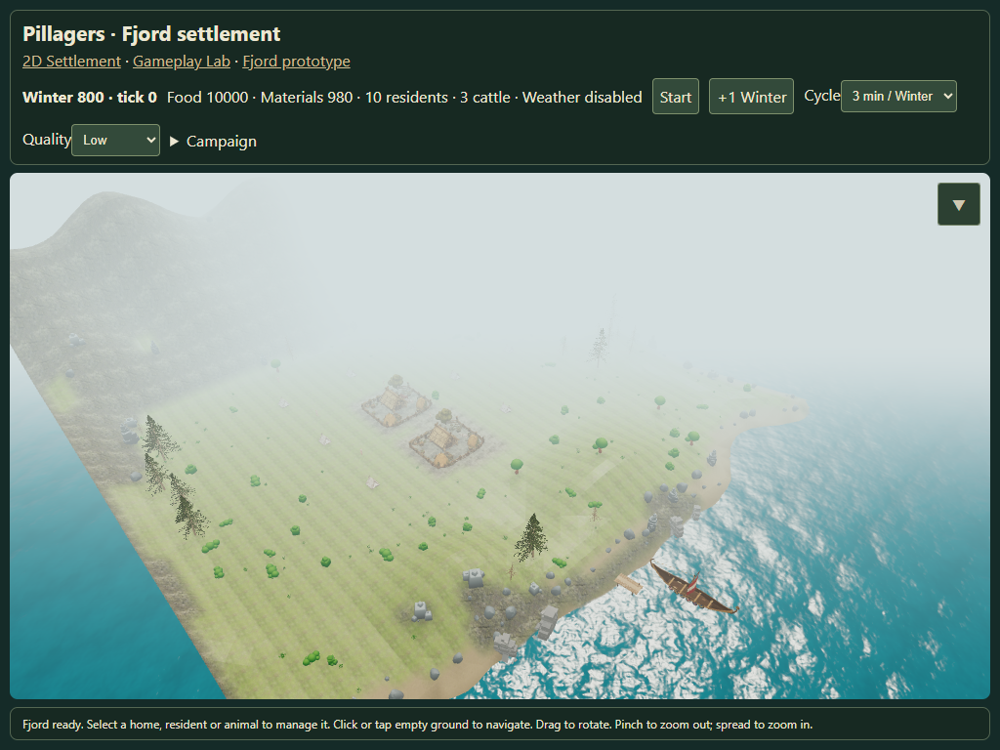
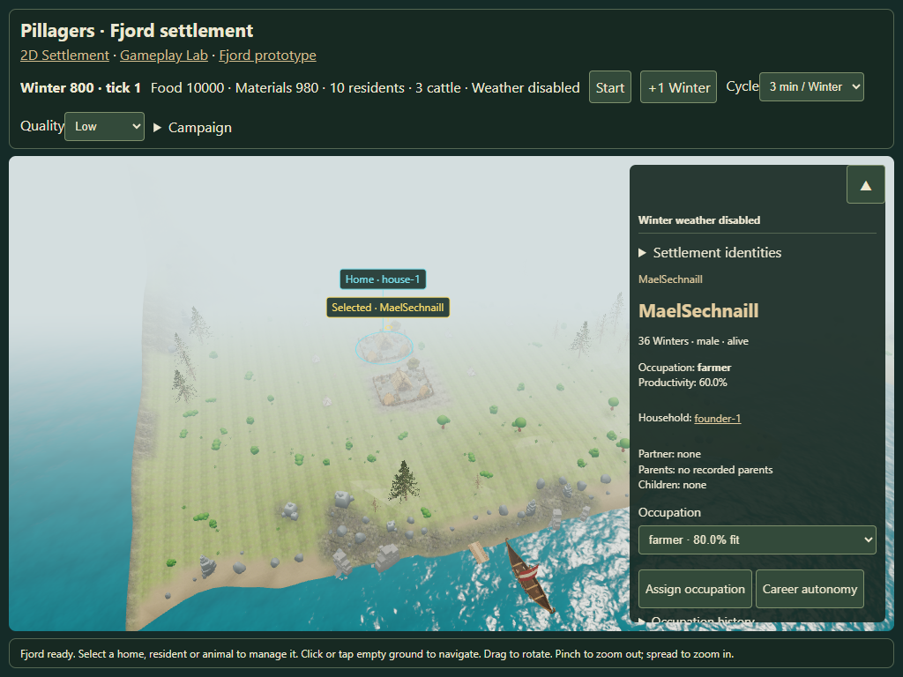
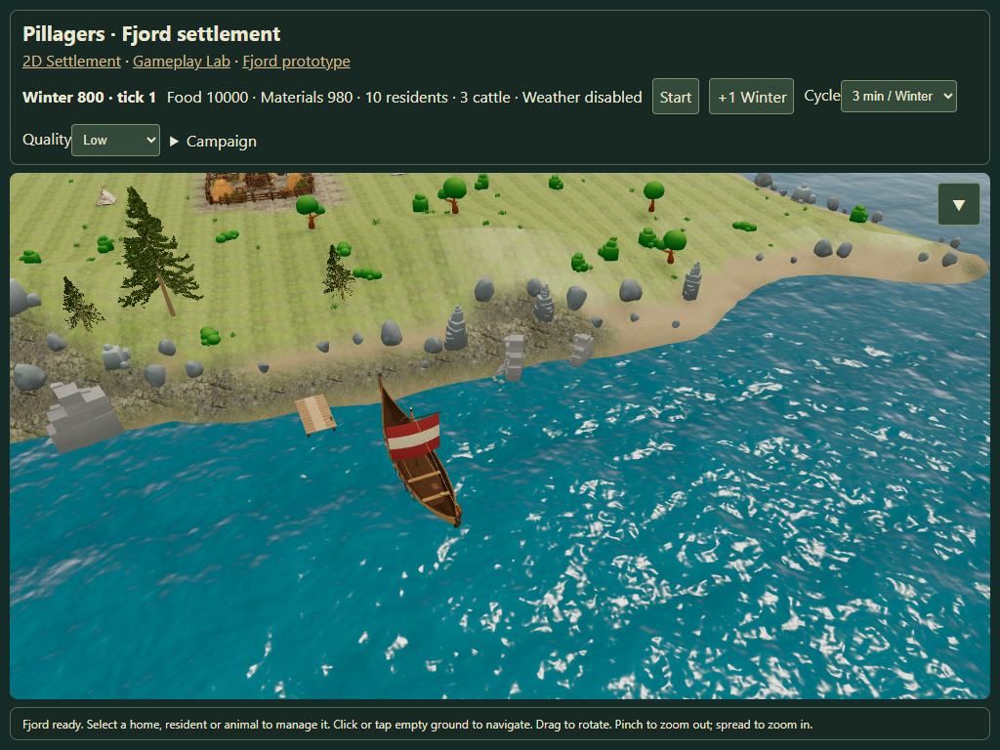

Fjord mooring and collapsible management
Touch emulation at 1024×768. Report · Observations · Open settlement
Collapsed management
The ▼ button stays at the original panel corner. The canvas retains its size and receives gestures underneath.

Selecting a resident reopens management

Longship beside the pier
The larger hull retains the source pier heading and clears its footprint.
